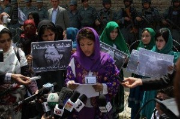

|
|

“عدالت کجاست؟” فریادی از حنجرۀ زنان معترض
يكشنبه27 فروردین 1391
نگاه زن: روز شنبه شهر کابل شاهد راهپیمایی متفاوتی از سوی زنان بوده است که خواستار عدالت خواهی در رابطه به زنان افغانستان شده بودند.
این راهپیمایی که از سوی نهاد زنان جوان برای تغییر به راه انداخته شده بود از فعالان حقوق بشر و حکومت افغانستان خواستند تا عاملین رویدادهای کشتار زنان را شناسایی و به مجازات برسانند. این زنان در اعتراضات خویش به قتل های اخیر زنان در خوست، پکتیا، هرات و دیگر ولایات اشاره نمودند.
در این گردهمایی زنان مظاهره کننده از کارته سه شهر کابل الی پارلمان کشور با شعارهایی چون “عدالت کجاست” اعتراضات خویش را مبنی بر بی توجهی نسبت به این خشونت ها علیه زنان ابراز داشتند. در اخیر؛ این گردهمایی با صدور یک اعلامیه پایان یافت.

اعلامیه زنان جوان برای تغییر
به نام آفریدگاری که همه انسانها را برابر آفرید
اعلامیه زنان جوان برای تغییر به مناسبت راه پیمایی تاریخ ۲۶حمل۱۳۹۱
از نوروز۱۳۹۱تا حال حد اقل پنج زن در افغانستان به قتل رسیده است. سه زن در هرات به قتل رسیدند؛ یکی شان به دست شوهرش سربریده شد. یک زن هم در خوست توسط شوهرش به قتل رسید و زن دیگری در ولایت پکتیا بعد از فیصله غیر عادلانه محکمه مردمی بیرحمانه اعدام شد. حلیمه ۱۷ ساله هم توسط شوهرش به حد مرگ لت و کوب شد.
علاوه بر این در سال ۱۹۳۱ بدترین قضایای خشونت علیه زنان علنی شدند.
 سحر گل توسط شوهر و خانواده شوهرش مورد شکنجه قرار گرفت، ناخن هایش کشیده شد، صورت و بدنش سوختانده شد و موهایش را کشیدند چون نمی خواست به فاحشه بودن تن بدهد. شوهرِ سحرگل هنوز آزاد است.
سحر گل توسط شوهر و خانواده شوهرش مورد شکنجه قرار گرفت، ناخن هایش کشیده شد، صورت و بدنش سوختانده شد و موهایش را کشیدند چون نمی خواست به فاحشه بودن تن بدهد. شوهرِ سحرگل هنوز آزاد است.
 ستوری به خاطر به دنیا آوردن سومین دخترش به واسطه خشو و شوهرش لت و کوب و توسط ریسمان خفه شد. شوهرِ ستوری هنوز آزاد است.
ستوری به خاطر به دنیا آوردن سومین دخترش به واسطه خشو و شوهرش لت و کوب و توسط ریسمان خفه شد. شوهرِ ستوری هنوز آزاد است.
 به خاطر رد تقاضای ازدواج به صورتِ ممتاز و خواهرانش تیزاب پاشیدند. فقط یکی از حمله کنندگان گرفتار شده اند.
به خاطر رد تقاضای ازدواج به صورتِ ممتاز و خواهرانش تیزاب پاشیدند. فقط یکی از حمله کنندگان گرفتار شده اند.
 قمرگل توسط دو مرد مورد تجاوز قرار گرفت اما به اتهام زنا زندانی است. متجاوزین آزادند.
قمرگل توسط دو مرد مورد تجاوز قرار گرفت اما به اتهام زنا زندانی است. متجاوزین آزادند.
 نازنین دختری نُه ساله که توسط دو کاکایش مورد تجاوز قرار گرفت و هنوز هم منتظر عدالت است. متجاوزین هنوز آزاد اند.
نازنین دختری نُه ساله که توسط دو کاکایش مورد تجاوز قرار گرفت و هنوز هم منتظر عدالت است. متجاوزین هنوز آزاد اند.
 عزیزه دختری چهارده ساله که توسط یکی از زورمندان قریه به مدت بیست روز از خانه اش اختتاف شد و مورد تجاوز قرار گرفت. عزیزه به خانه اش در جوزجان برگشته است و چون شکایت کرده بود ترس دارد که جان خودش و خانواده اش در خطر باشد. متجاوز هنوز آزاد است.
عزیزه دختری چهارده ساله که توسط یکی از زورمندان قریه به مدت بیست روز از خانه اش اختتاف شد و مورد تجاوز قرار گرفت. عزیزه به خانه اش در جوزجان برگشته است و چون شکایت کرده بود ترس دارد که جان خودش و خانواده اش در خطر باشد. متجاوز هنوز آزاد است.
 سیما معلمی که توسط برادرش به دلیل کار کردن بیرون از خانه در بغلان توسط چاقو به قتل رسید.
سیما معلمی که توسط برادرش به دلیل کار کردن بیرون از خانه در بغلان توسط چاقو به قتل رسید.
 سادات دختری پانزده ساله است که به مردی که بیشتر از سی سال دارد عقد شده بود و روزانه مورد لت و کوب بیرحمانه قرار می گرفت. سادات کوشش کرد خودسوزی کند، اما نجات یافت و فعلا تحت تداوی قرار دارد. هیچ کسی به جرم خشونت با او گرفتار نشده است.
سادات دختری پانزده ساله است که به مردی که بیشتر از سی سال دارد عقد شده بود و روزانه مورد لت و کوب بیرحمانه قرار می گرفت. سادات کوشش کرد خودسوزی کند، اما نجات یافت و فعلا تحت تداوی قرار دارد. هیچ کسی به جرم خشونت با او گرفتار نشده است.
این قضایا چند مثال از خشونتی است که زنان در سراسر افغانستان روزانه با آن روبرو استند.
کمسیون مستقل حقوق بشر افغانستان در سه ماه دوم سال ۲۰۰۱ یک هزار و بیست و شش قضیه خشونت علیه زنان را ثبت و راجستر کرده بود که این رقم در تمام سال ۲۰۱۱ به دو هزار و هفت صد قضیه می رسید. اکثریت قضایای خشونت ثبت نشده و ناشنیده باقی می مانند. در حالیکه قانون منع خشونت علیه زنان برای لت و کوب، کشتار، شکنجه، تجاوز و دیگر جنایات علیه زنان به صورت عادلانه جزا تعیین کرده است، متخلفین به ندرت مجازات می شوند. در حقیقت، گاهی خود زنان مجازات می شوند.
دین مقدس اسلام و قانون اساسی افغانستان هم بر عدالت اجتماعی و حقوق برابر برای انسانها تاکید دارد. دین اسلام دینی است که انسانها را از زنده به گور کردن و بی رحمی و بی عدالتی در مقابل زنان و دخترانشان منع کرد. و هنوز هم در یک مملکت اسلامی در دو هفته پنج زن کشته می شوند و هیچ نشانی از عدالت نیست. دین اسلام محبت را بین زنان و شوهران به وجود آورد و در این مملکت اسلامی وقتی شوهری زنش را می کشد، حق اسلامی و انسانی زن را فراموش می کنیم و کسی حاضر نیست عدالت را عملی کند. براساس قانون اساسی افغانستان زن و مرد مساوی اند، اما در همین مملکت زنی که بالایش تجاوز صورت گرفته به اتهامِ زنا زندانی می شود و متجاوزین آزادند. در همین مملکت به یک طفل نه ساله توسط کاکاهایش تجاوز می شود و عدالت خاموش است.
ما، زنان و مردان برابری خواه و عدالت طلب افغانستان، از نمایندگان ملت، که نمایندگان زن و مرد افغانستان استند، از وزارت عدلیه افغانستان، که باید محیطی عادلانه را برای زن و مرد به وجود بیاورد، و از وزارت زنان افغانستان، که باید از حق زنانی که بی رحمانه لگدمال می شوند دفاع کنند، تقاضا می کنیم که دیگر زنان را فراموش نکنند و وقتی مقابل چشم شان این همه جنایت اتفاق می افتد، عدالت و انسانیت را به یاد بیاورند و صدای خود را بلند کنند.
خواسته های نهاد زنان جوان برای تغییر به نمایندگی از میلیون ها زن افغان اینها استند:
 مردان، پدران، شوهران، برادران: تا چی زمان در مقابل این جنایات خاموش می باشید؟ تا زمانی که زنی از خانواده خودتان اعدام شود، تیرباران شود، پارچه پارچه شود و به قتل برسد؟ بی عدالتی به یک زن، بی عدالتی به همه زنها است. صدای خود را بلند کنید.
مردان، پدران، شوهران، برادران: تا چی زمان در مقابل این جنایات خاموش می باشید؟ تا زمانی که زنی از خانواده خودتان اعدام شود، تیرباران شود، پارچه پارچه شود و به قتل برسد؟ بی عدالتی به یک زن، بی عدالتی به همه زنها است. صدای خود را بلند کنید.
 اشد مجازات برای کسانی که در این دو هفته گذشته دو خواهر و یک زن را در هرات، یک زن را در پکتیا و یک زن دیگر را در خوست کشتند.
اشد مجازات برای کسانی که در این دو هفته گذشته دو خواهر و یک زن را در هرات، یک زن را در پکتیا و یک زن دیگر را در خوست کشتند.
 مجازاتِ سنگین و عادلانه برای کسانیکه بالای کودکان و زنانِ افغان تجاوز می کنند.
مجازاتِ سنگین و عادلانه برای کسانیکه بالای کودکان و زنانِ افغان تجاوز می کنند.
 حمایت از خانه های امن و ایجاد خانه های امن برای زنانی که به خاطر خشونت و یا مجبور شدن به فحشا مجبور به فراراز خانه می شوند.
حمایت از خانه های امن و ایجاد خانه های امن برای زنانی که به خاطر خشونت و یا مجبور شدن به فحشا مجبور به فراراز خانه می شوند.
 ما خواهان رهایی زنانی که بخاطر اینکه مورد تجاوز گرفته اند در زندان استند استیم.
ما خواهان رهایی زنانی که بخاطر اینکه مورد تجاوز گرفته اند در زندان استند استیم.
 پیگیری تمام قضایای خشونت علیه زنان که در این اعلامیه نشر شده اند و قضایای که ذکر نشده اند.
پیگیری تمام قضایای خشونت علیه زنان که در این اعلامیه نشر شده اند و قضایای که ذکر نشده اند.
 قانونی که روی ورق باقی می ماند به صورت واقعی ارزشی ندارد! دولت باید تمام اقدامات ضروری را برای بلند بردن آگاهی عامه، آگاهی تطبیق کننده گان قانون، و مراجع عدلی در مورد قانون محو خشونت علیه زنان بردارد. ما از وزارت امور زنان، وزارت عدلیه، وزارت اطلاعات و فرهنگ و مطبوعات دولتی خواهش می کنیم تا در سطح ولایات، مناطق، و ملی در مورد قانون منع خشونت علیه زنان کمپاین به راه بیاندازند!
قانونی که روی ورق باقی می ماند به صورت واقعی ارزشی ندارد! دولت باید تمام اقدامات ضروری را برای بلند بردن آگاهی عامه، آگاهی تطبیق کننده گان قانون، و مراجع عدلی در مورد قانون محو خشونت علیه زنان بردارد. ما از وزارت امور زنان، وزارت عدلیه، وزارت اطلاعات و فرهنگ و مطبوعات دولتی خواهش می کنیم تا در سطح ولایات، مناطق، و ملی در مورد قانون منع خشونت علیه زنان کمپاین به راه بیاندازند!
 تطبیق قانون محو خشونت علیه زنان به صورت جدی در سراسر افغانستان توسط وزارت عدلیه.
تطبیق قانون محو خشونت علیه زنان به صورت جدی در سراسر افغانستان توسط وزارت عدلیه.
 دادخواهی برای خواهران و مادران ما که روزانه در آتش خشونت و زن ستیزی می سوزند توسط رسانه ها و مراجع دولتی.
دادخواهی برای خواهران و مادران ما که روزانه در آتش خشونت و زن ستیزی می سوزند توسط رسانه ها و مراجع دولتی.
 شکستن سکوتِ خفقان آور فعلی در مقابل جنایات علیه زنان توسط مراجع دولتی و رسانه ها.
شکستن سکوتِ خفقان آور فعلی در مقابل جنایات علیه زنان توسط مراجع دولتی و رسانه ها.
 تقبیح تبعیض و خشونت علیه زنان توسط شورای علما. علمایِ گرامی! شما مگر این جنایات و بی عدالتی ها را نمی بینید؟ به عنوانِ علمای دین آیا این وظیفه شما نیست که با جرات صدا بلند کنید؟ پس چرا خاموشید؟
تقبیح تبعیض و خشونت علیه زنان توسط شورای علما. علمایِ گرامی! شما مگر این جنایات و بی عدالتی ها را نمی بینید؟ به عنوانِ علمای دین آیا این وظیفه شما نیست که با جرات صدا بلند کنید؟ پس چرا خاموشید؟
 وزارت صحت عامه باید نظارت کند تا داکتران تمام قضایای مشکوکِ سواستفاده و لت و کوب زنان را به مقامات گزارش بدهند و مقامات باید در همکاری با نهاد های حقوق بشری اقدامات ضروری را برای امنیت و حفاظت از زنان انجام بدهند.
وزارت صحت عامه باید نظارت کند تا داکتران تمام قضایای مشکوکِ سواستفاده و لت و کوب زنان را به مقامات گزارش بدهند و مقامات باید در همکاری با نهاد های حقوق بشری اقدامات ضروری را برای امنیت و حفاظت از زنان انجام بدهند.
 دفتر رییس جمهور افغانستان علاوه بر تقبیح این جنایات باید با مقامات به صورت مستقیم و فعال کار کند تا تمام متخلفین و جنایت کاران علیه زنان گرفتار شوند و به صورت عادلانه مجازات گردند. آقای رییس جمهور! زنان هم به همین مملکتی که شما ریاست حکومت آن را به عهده دارید، تعلق دارند: به حقوق و امنیت آنها توجه جدی نمایید. به عنوان رهبر این کشور حمایت از حقوق زنان و دختران این کشور از مکلفیت های شماست. هر زن و دختر افغان حق دسترسی به عدالت و حمایت توسط قانون را دارد. عین حقوقی را که که به نور دیده خود، ملالی کرزی، توقع دارید به سایر زنان و دختران افغان نیز روا بدارید.
دفتر رییس جمهور افغانستان علاوه بر تقبیح این جنایات باید با مقامات به صورت مستقیم و فعال کار کند تا تمام متخلفین و جنایت کاران علیه زنان گرفتار شوند و به صورت عادلانه مجازات گردند. آقای رییس جمهور! زنان هم به همین مملکتی که شما ریاست حکومت آن را به عهده دارید، تعلق دارند: به حقوق و امنیت آنها توجه جدی نمایید. به عنوان رهبر این کشور حمایت از حقوق زنان و دختران این کشور از مکلفیت های شماست. هر زن و دختر افغان حق دسترسی به عدالت و حمایت توسط قانون را دارد. عین حقوقی را که که به نور دیده خود، ملالی کرزی، توقع دارید به سایر زنان و دختران افغان نیز روا بدارید.
زنان افغانستان و مردانی که وجدان بیدار دارند این جنایات را هیچ گاهی فراموش نخواهند کرد و تا تامین عدالت و برابری در این مملکت ما پا از مبارزه پس نمی کشیم.
به امیدِ عدالت و برابری!
زنان جوان برای تغییر